Zoezi la tano1.Vijiji 50 viligawiwa jumla ya magunia 133,700 ya mahindi kwa idadi sawa. Je, kila kijiji kilipata magunia mangapi ya mahindi hayo?2.Shule za msingi 24 zilipanda jumla ya miti 446,400. Ikiwa kila shule ilipanda idadi sawa ya miti, je, kila shule ilipanda miti mingapi?3.Mwalimu aliwagawia wanafunzi 60 jumla ya karatasi 414 kwa usawa. (a) Kila mwanafunzi alipata karatasi ngapi?(b) Mwalimu alibakiwa na karatasi ngapi?4.Viwanda 50 kwa wastani vinatengeneza vigae 80,000 kwa siku. Je, kila kiwanda kinatengeneza wastani wa vigae vingapi kwa siku?5.Mwenyekiti wa kijiji alikuwa na magunia 955 ya mahindi, kama alitakiwa kugawa magunia hayo kwa kaya 40 kwa usawa.(a) Je, kila kaya ilipata magunia mangapi ya mahindi?(b) Magunia mangapi yalibaki?6.Vitabu 99,000 viligawanywa katika shule 200 kwa idadi sawa. Je, kila shule ilipata vitabu vingapi?7.Chaki 100,800 zimefungashwa katika makasha 700 kwa idadi sawa. Je, kila kasha lina chaki ngapi?8.Wanachama 24 wa chama cha ushirika walikuwa na mananasi 986. Iwapo waligawana mananasi hayo kwa idadi sawa, yalibaki mananasi mangapi?9.Mfanyabiashara huuza jumla ya kalamu 455,000 kwa siku 14. Ikiwa kila siku mfanyabiashara huyo huuza idadi sawa ya kalamu, je, huuza kalamu ngapi kwa siku? 10. Bati 136,890 zilitumika kukarabati vyumba vya madarasa katika shule 30. Ikiwa kila chumba cha madarasa kilitumia idadi sawa ya bati, je, kila shule ilitumia bati ngapi?